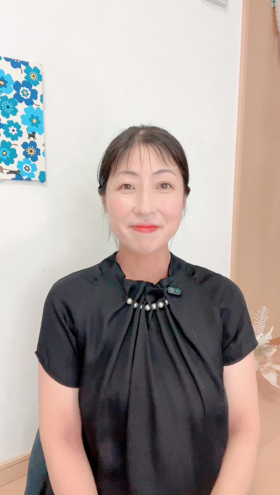

2026年10月〜2027年3月・月2回のオンライン講座
自分のタイプの回は、1回だけ。
残りの11回は、自分以外の人の回です。

講師 さっちゃん公認心理師／エニアグラムセッション延べ350名
第1回は 10月15日（木）21:00 スタート／お申し込みは第1回の前日まで
自分のことは、1回わかれば「そうそう、私ってこう！」ってなるんです。
でも、そばにいる人のことは、わからないままなんですよね。
これ、わざとです。
「なんで？」の答えが見つかるのは、自分の回じゃなくて、その人の回。
毎回だれかのタイプを学ぶたびに、「家族の誰かはこれかも」が出てきます。
自分の回は、むしろ答え合わせに近いんです。
第1回は 10月15日（木）21:00〜。1回120〜150分です。
第2回からの曜日・時間帯は、お申し込みのときのアンケートで決めます（平日午前／平日午後／平日夜／土曜午前／土曜午後）。どの時間帯になっても、録画で受けられます。
1回目がエニアグラム全体のお話で、最後の12回目が「タイプの見抜き方」。
それに、11回は自分以外の人の回なので、聞いているうちに「これは自分じゃないな」が先にわかってきます。
消去法で見えてくるの、けっこう面白いですよ。
ちなみに、11・12回目では「なぜ止まったか」も扱います。
私、110万円の講座で止まったことがあって。そのとき「ちゃんとしていると思われたい」が出てきて、質問できなくなったんです。ふだんの私はそんなこと気にしないタイプなのに←
人はストレスがかかると、自分のタイプとは別の面が出てきます。そんな「タイプの動き方」まで見ていきます。
PDFでお渡しします。ご希望の方には、冊子でもお渡しします。
ご自身のことを、じっくり見る時間です。自分の回がまだ先でも、ここでいつでも扱えます。
日時は、公式LINEで一緒に決めます。2027年3月末までにお使いください。
これまでエニアグラムを学んできた受講生の方たちと交流できます。タイプについてのコラムや、「このタイプの人には、この発信者さんの言葉がしっくりくるかも」というSNSアカウントの紹介もお届けします。
講座は月2回。つまり、2週間あくんです。
その2週間で、たいてい忘れます。私もそうでした。
だから半年のあいだ、ずっとエニアグラムの話が流れている場所をつくります。
お休みした回も、録画で受けられます。わかったつもりの回も、あとから見返すと「あ、これ夫だ」が出てきたりします。
全12回を受講された方に、あんだんてのさっちゃんからエニアグラムを学んだことを示す修了証を発行します。
※受講したことの証明です。資格や認定ではありません。
この講座を受けたら必ず変われる、というものではありません。
やることは地味です。自分の反応を振り返って、言葉にして、日常で1つ試す。それだけ。
ただ、その地味なことを半年つづける相手がいるかどうかで、けっこう変わるんです。
コツコツしか勝たん、ってほんとにそうで♡
三児の母。元教員で、障害のあるお子さんの療育と特別支援学校での教育に10年以上たずさわってきました。筑波大学大学院で応用行動分析を研究。
2人目の妊娠中、仕事復帰のことや夫婦関係など悩みが尽きなかったときにエニアグラムに出会いました。2022年に心の相談室「あんだんて」を開業。エニアグラムと四柱推命で、人と人のあいだをほどくお手伝いをしています。
ずっと学びたかったエニアグラムを学んで、ますます周りにいるひとや関わってる人のタイプを知りたくなって理解したいと思うようになりました。相手の本質を知り愛おしくなったり、自分の捉え方も変わったり。自分自身が一番自分の事を理解してあげれてなかった事の氣づきもありました。
タイプ1w2・女性（エニアグラム講座）
さっちゃんは、お客様に寄り添うのが上手！芸能人とかわかりやすいひとだしてくれたり、いろんな角度からその人を教えてくれる。マンツーマンだと私もいいたいことがいえる。身近な人こうかなーとか話したいこと聞いてくれるのありがたい。いろんな人がいるからこそ、私のよさや、周りの人の考えをいつもより俯瞰してみれるようになる。エニアって深くて面白い🥰
タイプ6w7・女性（マンツーマン講座）
これまで学んでくださった方のお仕事（一部）
| 期間 | 2026年10月〜2027年3月 |
|---|---|
| 回数 | 月2回・全12回（オンライン） |
| 第2回からの時間帯 | お申し込み時のアンケートで決定 平日午前／平日午後／平日夜／土曜午前／土曜午後 |
| 第1回 | 2026年10月15日（木）21:00〜 |
| 1回の長さ | 120〜150分 |
| 含まれるもの | 講座テキスト（PDF・ご希望で冊子）／個別セッション60分×2回／Discordコミュニティ／全回の録画／ディプロマ |
| 受講料（税込） | 銀行振込（一括）150,000円 クレジットカード 165,000円 分割は6回まで・手数料なし（例：6回なら27,500円×6回）。回数はご相談ください 全12回セットのみ（単発受講はありません） |
| 申込締切 | 2026年10月14日（水） 第1回の前日まで |
| キャンセル | 第1回の前日までは全額返金します。第1回が始まってからは、返金はありません（全回の録画でいつでも受けられるため）。 くわしくは特定商取引法に基づく表記へ |
迷っていることがあれば、公式LINEから気軽に聞いてください
エニアグラムを学ぶ講座。9タイプすべてを知って、まわりの人を理解する目を育てます。
あなたとご家族のトリセツを作るプログラム。自分のことをじっくり見てほしい方に。
どちらが合うか迷ったら、遠慮なく聞いてください。売り込みではなく、合わないほうを選んでほしくないんです。